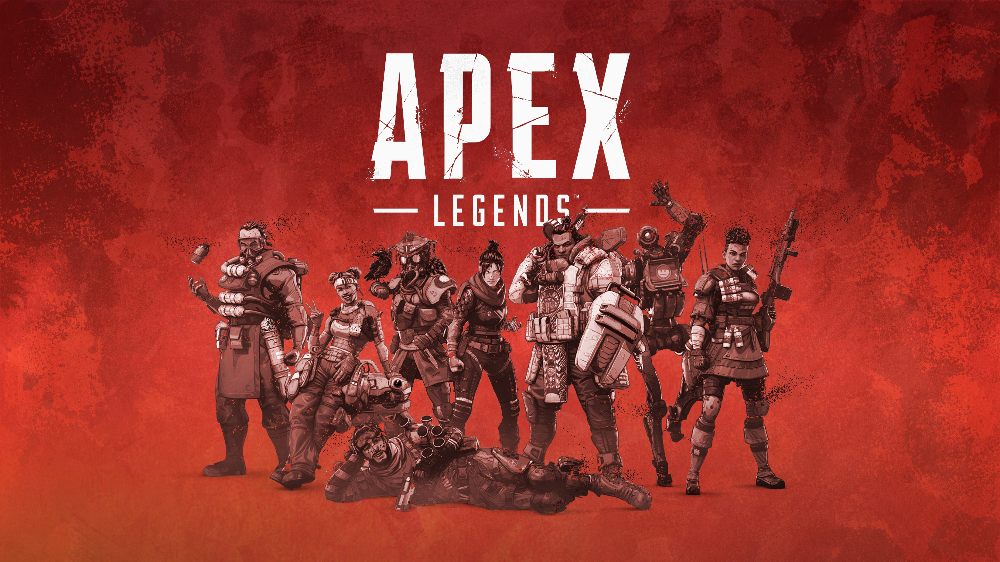
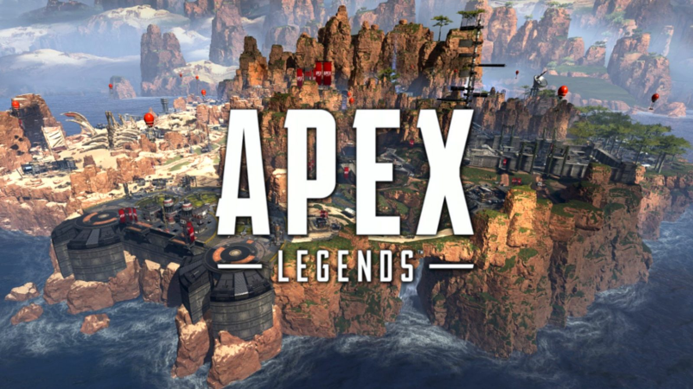
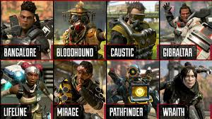
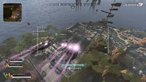
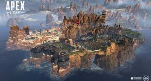
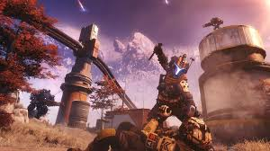

Apex Legends

Apex Legends adalah permainan battle royale free-to-play yang dikembangkan oleh Respawn Entertainment dan diterbitkan oleh Electronic Arts. Permainan ini berada di alam semesta yang sama dengan Titanfall. Permainan ini dirilis untuk Microsoft Windows, PlayStation 4, dan Xbox One pada 4 Februari 2019. Satu minggu setelah dirilis, permainan ini telah diunduh lebih dari 25 juta kali dan lebih dari 2 juta pemain daring secara bersamaan.
Source: Wikipedia
Latar belakang

Kisah Apex Legends ini dimulai dari kelanjutan dunia Titanfall, di sebuah peradaban pinggiran luar angkasa yang jauh dimana selama ratusan tahun yang lalu terdapat konflik besar antara Interstellar Manufacturing Corporation (IMC) dengan Frontier Militia.
Konflik ini disebut sebagai The Frontier War. Setelah konflik ini berakhir dengan kekalahan
IMC, kedua pihak pun menarik kembali semua senjata beserta teknologi mereka, sehingga daerah ini menjadi terbengkalai.
Akibat perang tersebut, warga Frontier meskipun merasakan perdamaian, sudah tidak mampu lagi melanjutkan kehidupan di sana. Mereka yang berani pun melakukan relokasi ke daerah tepi Frontier, yaitu Outlands.
Di Outlands, sebuah tempat yang tidak tersentuh oleh dampak dari perang, dan subur dengan sumber daya alam, memiliki sebuah budaya untuk menyelesaikan permasalahan dengan sebuah pertandingan bloodsport. Pertandingan tersebut adalah Apex Games.
Apex Games diikuti oleh berbagai kalangan mulai dari penjelajah, hingga kriminal; dan mereka semua ingin mencari kekayaan, kekuasaan dan ketenaran.
Legends

Dalam Apex Legends, karakter yang dimainkan, kita sebut sebagai Legends. Setiap karakter ini tentunya mempunyai skill dan ability yang berbeda, serta desain karakter dan dialog yang unik. Aspek karakterisasi ini sangat berbeda dibandingkan genre battle royale pada umumnya dimana setiap karakter yang dimainkan mempunyai skill dan ability yang sama, walaupun kita bisa mengganti penampilan luarnya.
Voice line adalah kesempatan tiap karakter untuk dapat mengekspresikan dirinya sendiri tanpa mengganggu kita sebagai pemain untuk mengendalikan karakter dalam permainan. Tipe voice line di sini sangat beragam, mulai dari yang kocak hingga yang tegas dan serius. Variasi tersebut tentu bisa memperkaya sensasi bermain.
Keunikan tiap ability yang dimiliki Legends juga akan menciptakan peranan unik dalam tim. Sama seperti genre MOBA, Apex Legends menekankan pada kemampuan satu tim untuk bekerja sama dalam menggunakan ability masing masing karakter.
Untuk melihat apa saja karakter atau legends yang bisa dipilih dengan daftar ability mereka, bisa kamu pelajari dari link ini.
Dengan adanya fitur ability unik di setiap karakter, pemain baru yang belum terbiasa dengan mode battle royale, bisa merasa berkontribusi dalam tim hanya dengan menggunakan ability karakter mereka. Ini adalah salah satu strategi Apex Legends untuk menarik pemain baru yang kurang familiar dengan mode battle royale.
Gameplay
Setelah membahas detail teknis dari game, sekarang kita akan membahas garis besar permainan Apex Legends.
Setiap ronde dimulai dengan maksimum 20 squad, dan setiap squad terdiri dari maksimum 3 orang, dengan setiap karakter mempunyai ability unik. Di sini, pemain akan dipaksa untuk bekerja sama dengan sesama anggota tim.
Memulai permainan dengan terjun bebas

Seperti tradisi kesuksesan tiap genre battle royale lainnya, pada awal ronde dimulai setiap pemain akan terjun bebas dari atas arena. Setiap pemain bebas memilih kapan mulai terjun dan bisa mengarahkan kemana mereka mendarat. Setelahnya, setiap orang mulai melakukan looting sebagai tahap persiapan sebelum melawan musuh.
Namun, tentu saja sebagai anggota tim yang baik, kita harus bisa berkoordinasi dengan anggota tim kita untuk membahas kapan kita mulai terjun keluar supaya tidak terlalu terpencar pada awal permainan.
Dalam tiap tim, akan ada 1 orang dalam tim yang bisa diberikan posisi sebagai jumpmaster. Ia berfungsi untuk memimpin anggotanya yang lain untuk otomatis mengikuti kapan ia akan terjun keluar, mengikuti gerakan-gerakannya di udara hingga mendarat.
Menjelajahi peta

Setelah mendarat, kita akan merasakan bagaimana bedanya movement dalam Apex Legends, khususnya dalam memberikan pilihan untuk menjelajahi peta. Sistem pergerakan atau movement di Apex Legends memberikan kebebasan yang sangat besar bagi pemain untuk memilih rute perjalanan, mulai dari sistem no fall damage yang mendukung kita untuk menggunakan rute dari daerah yang tinggi tanpa takut mati kalau jatuh; kecepatan sliding karakter yang mengikuti momentum kecepatan karakter kita turun dari zipline; dan masih banyak lagi sistem movement yang ada.
Walaupun sistem movement ini mudah dilakukan semua orang, banyak trik kecil lainnya yang bisa membuat manuver movement dasar ini untuk menggerakkan pemain lebih cepat lagi. Manuver ini tentu membutuhkan skill pemain untuk dikuasai secara maksimal.
Melawan musuh

Dalam permainan, saat HP kita dihabisi oleh musuh, karakter kita akan berubah ke downed state, ini membuat karakter kita merangkak dengan lambat dan tidak bisa menggunakan senjata untuk melawan musuh.
Dalam kondisi ini karakter masih bisa berkontribusi dalam tim walaupun tidak bisa menembak musuh seperti memberikan ping ke arah musuh untuk menunjukkan lokasi mereka ke teman kita. Setelah pelan-pelan merangkak ke tempat lain yang lebih aman lagi, kita bisa di-revive oleh anggota tim atau menggunakan item revive pada diri sendiri.
source: esportnesia.com